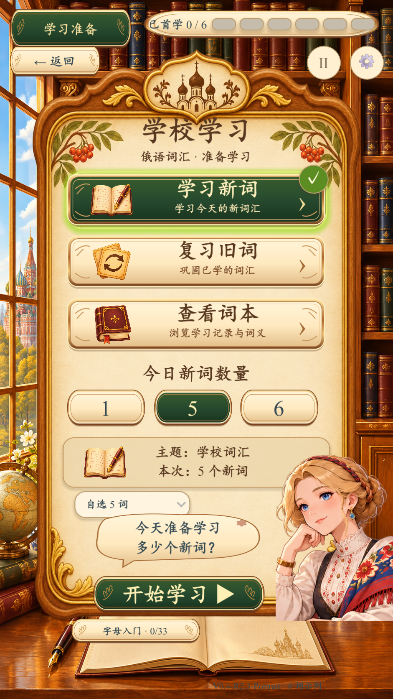
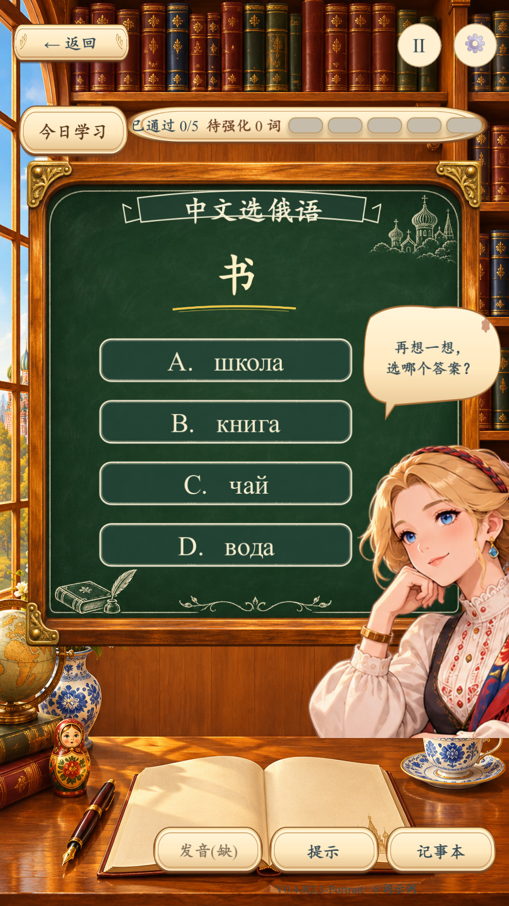
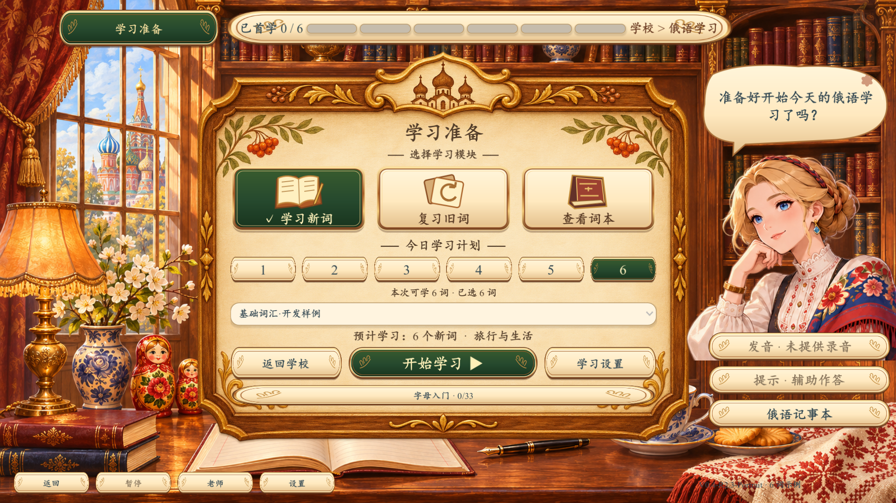
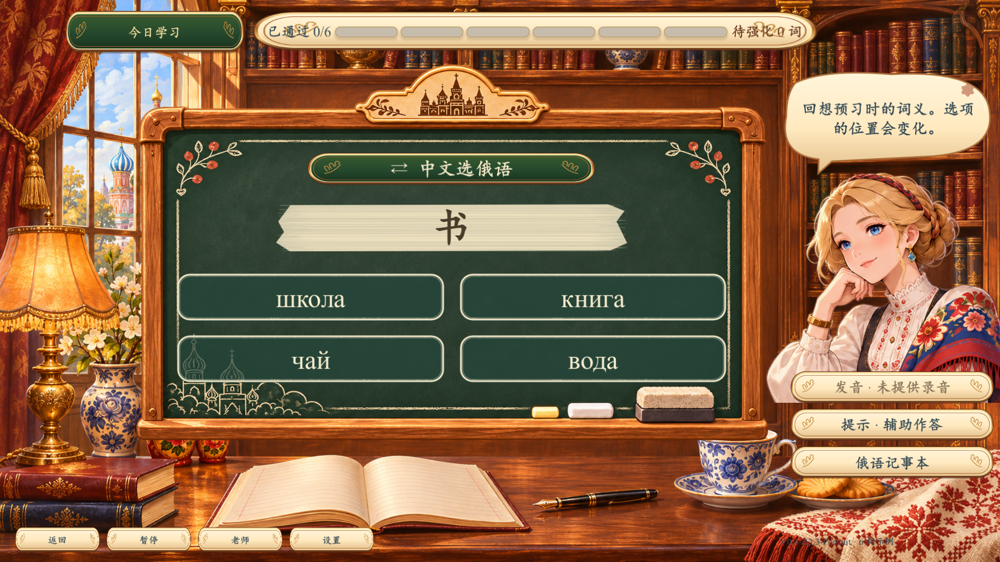

学校 V0.4 · 第二轮修复与竖屏还原
最终构建：V0.4-R2.3-Portrait，受控 PLAYTEST，等待负责人视觉验收。参考图只用于对照，未作为整张游戏界面。下面的最终截图直接来自 Windows 导出包；原 PNG 未修饰，网页仅按比例展示，点击可查看原图。
竖屏：学习准备
已还原纵向三张模式卡、纸张木框、数量选择、学习计划、下方开始按钮和右下老师。数量来自六词示例的真实剩余量；参考图经济条与 10/20 档位没有伪造进度。图标、雕花和角色裁切仍有差异。
参考图 · 非运行界面 V0.4-R2.3-Portrait · 真实 Windows Godot 截图
V0.4-R2.3-Portrait · 真实 Windows Godot 截图
竖屏：黑板四选一
四行 A–D 为实际题目按钮，顶部进度、题型与提示均由运行状态生成。保留粉笔文字、绿黑板木框、右侧老师和底部三个功能按钮。原独立老师素材与背景道具细节并非参考原画的逐像素复刻。
参考图 · 非运行界面 V0.4-R2.3-Portrait · 真实 Windows Godot 截图
V0.4-R2.3-Portrait · 真实 Windows Godot 截图
横屏：保留学习准备
横屏继续使用横向三模式卡、宽纸张框及右侧老师；本轮竖屏单独排版，不拉伸整张横屏界面。
参考图 · 非运行界面 V0.4-R2.3-Portrait · 真实 Windows Godot 截图
V0.4-R2.3-Portrait · 真实 Windows Godot 截图
横屏：四选一同步
横屏同步四选一，采用 2×2 控件网格；竖屏采用纵向四行。横屏长反馈和词本可滚动。
参考图 · 非运行界面 V0.4-R2.3-Portrait · 真实 Windows Godot 截图
V0.4-R2.3-Portrait · 真实 Windows Godot 截图
最终构建：完整实际流程截图
原生 Windows 桌面点击记录：字体修复前 R2.2 的两入口完整流程
最终 R2.3 的包内完整鼠标流程另见 final-portrait 与 final-integrated；R2.2 原生记录保留以区分测试版本，不冒充最终包截图。
原生桌面点击 · 竖屏四选题（R2.2） 原生桌面点击 · 竖屏结算（R2.2）
原生桌面点击 · 竖屏结算（R2.2） 原生桌面点击 · 地图进入学校（R2.2）
原生桌面点击 · 地图进入学校（R2.2） 原生桌面点击 · 主游戏学校结算（R2.2）
原生桌面点击 · 主游戏学校结算（R2.2）
完整交付报告 · 实际测试汇总 · 构建与 SHA256